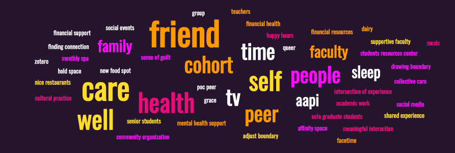

Below is a word cloud chart that shows how UCLA SEIS graduate students define community, support, and self-care.

Community Empowerment:
We hope that this project will empower students to reflect on your own experiences of practicing self-care and affirms the necessity of maintaining balance throughout an oftentimes challenging graduate school experience. We aim to illuminate the ways in which students have found community, support, and practice self-care in their school experiences.
Connect with us:We welcome any questions and feedback you may have. Please feel free to contact us at xher21@g.ucla.edu